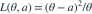
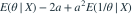

θ的后验为 ，损失为

。Bayes估计为？- A

- B
- C

- D

我已思考，展开答案与解析
正确答案：D
- 后验风险为

。 - 对a求导，最优值为 。
- Beta(3,2)下 ，故答案1/2。
易错提醒损失除以θ后不再是普通平方损失，不能直接用后验均值。
考后回忆 · 条件重建 · 回忆6的加权损失提高题
依据考试回忆重建；数字、选项和必要条件为补充设定，非原题。

。Bayes估计为？
。考后回忆 · 条件重建 · 回忆6的加权损失提高题
依据考试回忆重建；数字、选项和必要条件为补充设定，非原题。